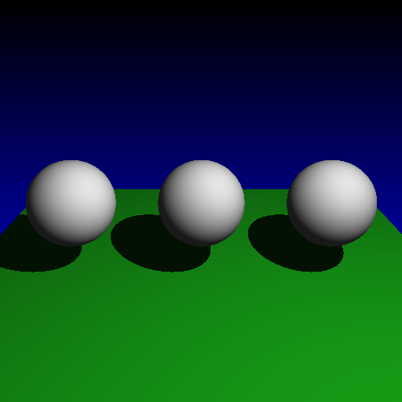
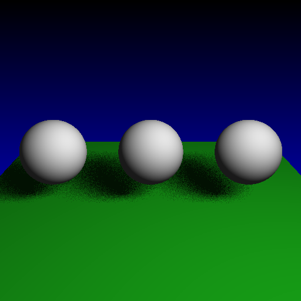
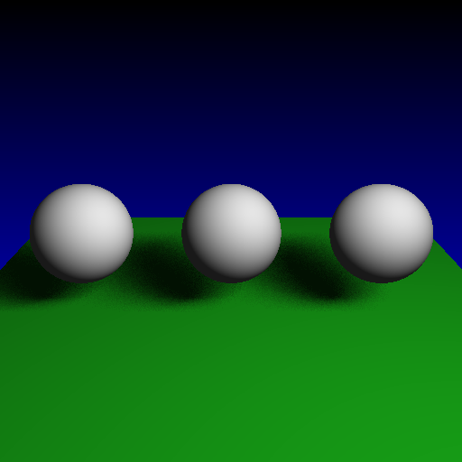
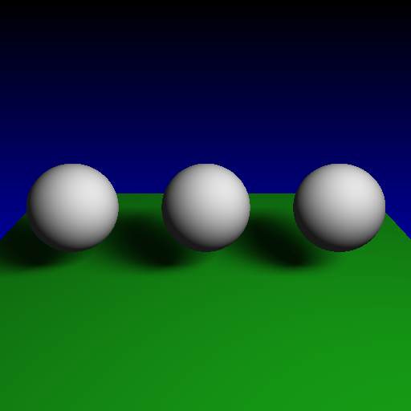

Objective 9:
Area Light Support and Soft Shadows
I implemented an area light in addition to the standard point light. This light is defined with 3 vertices as explained in my Raytracing manual. The result is a soft shadow with variable shadow intensity rather than the strict boolean "are you in shadow or not" method used by Point lights.
 Point light method with hard shadows
Area light with 1x1 shadow ray grid (1 shadow ray)  Area light with 2x2 shadow ray grid (4 shadow rays)  Area light with 4x4 shadow ray grid (16 shadow rays)  Area light with 10x10 shadow ray grid (100 shadow rays)... ooh pretty eh?!! |
Written by: Mike Jutan
CS 488 - Computer Graphics
University of Waterloo